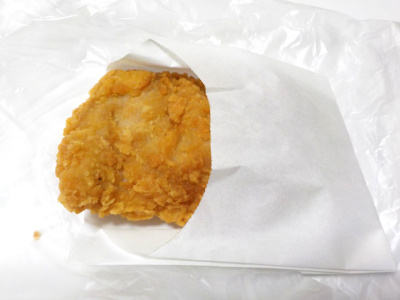
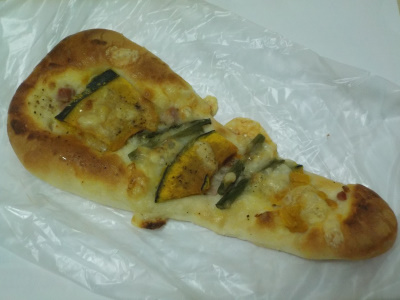
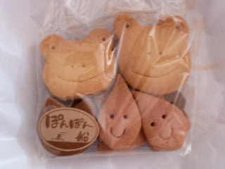
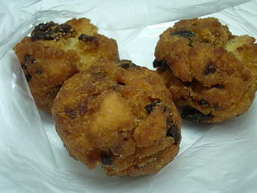
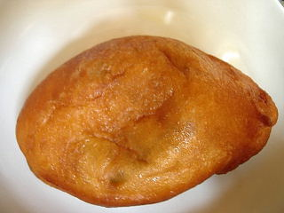

キララベーカリーのフライドチキン。
2023/12/18

パンを買いに行ったんですが、パンを買わないでチキンを買ってしまいました。
チキン美味しいなー。お肉は強いです。
次行くときはイチジクの入ったパンを買おうと思います。
島根県出雲市多伎町多岐135-1
2023/12/18

パンを買いに行ったんですが、パンを買わないでチキンを買ってしまいました。
チキン美味しいなー。お肉は強いです。
次行くときはイチジクの入ったパンを買おうと思います。
2018/11/11
ポテトのピザがあるのでカボチャのピザがあってもおかしくないと思うんですが、カボチャはポテトより味が強いです。

チーズの量が控えめなので、カボチャとアスパラの味がよくわかりました。
これはこれで美味しい惣菜パンだとは思うんですが、ピザっぽくないかな。
ピザだからってチーズやピザソースが必要なんてことはないですが、なんとなくパン寄りかなって思いました。
2011/06/08
道の駅キララ多伎にあるパン屋さんで販売しているクッキーです。
ぽんぽん船ってところが作ってます。

季節季節でクッキーの形が変わるんですが、今は梅雨時ってことでカエル、てるてるぼうず、しずく、くも、はっぱが入っていました。
可愛くていいですね。
2009/9/18
油が多くてちょっとカリカリのドーナッツですね。

イチジクのチップが入っているので、普通のものより甘さがちょっと強いです。
油分とか糖分なのであまりヘルシーな感じはしませんが、そうゆうものって美味しいんですよね。
ドーナッツはこうでなくちゃ！って思いました。
2008/4/29
中の具が濃い味ですね。タマネギの甘さとミンチの味と調味料の味がしっかり入ってて、揚げパンとよく合ってました。

今日はアンパンマンショーがあったみたいで、お客さんがとても多く身動きがとりにくかったです。トレーを持って混んだお店は辛かったです。
2007/11/10
イチジクの姿煮が、どーんと入ったパンケーキです。
フルーツの姿煮って久々に食べました。
パンケーキ自体はそんなに味がないので、イチジクの味がメインに感じました。
私はそんなにイチジクの姿煮を食べることがないので、イチジクの姿煮の味をいっぱい味わえてよかったです。
2007/5/3
同じ系列のパン屋さんでも販売しているフライドチキンです。
普段パン屋さんにはパンを買いたいと思って行くので、いままで買う事がなかったんですが、今日は食事をしに来たので食べてみました。
ハーブとかスパイスが効いてるフライドチキンってよくあるんですが、これは塩がメインのフライドチキンでした。ハーブやスパイスと違ってクセがなく、食べやすかったです。シンプルな味のものって味が軽いのでリラックスして食べれるし、美味しくていいですね。
2007/4/29
さくら餅が終了したお店が多いですが、キララではまだ桜の商品が置いてありました。まだ八重のさくらなんかが咲いてたりするので、個人的にはまだ桜餅とかは販売していて欲しいです。
もっちりとしたボール状の揚げパンの中に、桜の餡が入ってました。餡ドーナッツの餡が桜餡で、ちょっと意外な組み合わせなので変なくせがあるかなって思いましたが、案外まとまりが良かったです。
もちもちパンやドーナッツって、異色系のものが多く商品化されたので抵抗感がなくなりましたね。
2006/8/5
海水浴日和だったので、キララビーチは人でいっぱいでした。なので、道の駅もパン屋さんも人が多かったです。
今回食べたのは「いちじくドーム」ってパンですが、円柱形のパンの中にイチジクのジャムと沢山のカスタードクリームが入った商品でした。
イチジクジャムの味はほとんどしなくてちょっとガッカリだったんですが、ミルキーな感じのカスタードクリームがいっぱい入ってて甘くて良かったです。今日はいろいろ行って疲れてたので、その甘さで疲れが癒される感じがしました。
2005/11/19
ミルクパンっていうと、生地にミルクが多く含んでる柔らかいパンを想像するんですけど、ここのはあんパンのようにパンの中にミルクがちゃんと入ってます。
ミルクって言っても練乳なんですけど、パンの中に結構な量が流し込んであるので、しっかり甘いですし、ばっちりミルク味がします。
こんなタイプのミルクパンは初めてだったので、とっても新鮮でした。
菓子パンって思ったら、このタイプの方がしっかり甘くて美味しいかもしれませんね。